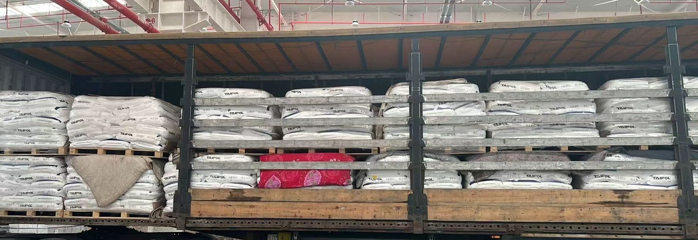

LOAD LIMITS
Heavy cargo: 22 tonnes comes first, then volume
Most enquiries arrive as a cubic-metre figure, because most cargo on this corridor is bulky. Dense cargo behaves differently. Steel sections, tiles, castings, bagged material: a load like that runs out of tonnes while the trailer still looks half empty. This page is about that ceiling — where the number comes from, what crossing it does to the plan, and what it changes in a quote.
- Ceiling per truck: 22 tonnes and 80 CBM, whichever comes first
- One trailer type for both: curtain-side, not a container
- Full trailers only — we do not consolidate
- Hub to customs, CPT / DAP
Two ceilings on one trailer
The same curtain-side trailer carries both limits, and they apply at once: 22 tonnes and 80 CBM. Whichever is reached first ends the load. That is why an answer to "how many trucks?" cannot come from volume alone.
Two things follow. First, the ceiling is not equipment-specific: a direct truck and a transshipment truck are loaded to the same 22 tonnes, so we publish one figure rather than two. Second, a container number is no help here. There is no 20-foot or 40-foot rating to measure cargo against, only the two limits above.
Which ceiling your cargo reaches first
Density decides, and the split point is easy to work out: 22 tonnes over 80 CBM is 275 kg per cubic metre. Cargo above that line fills the trailer by weight. Cargo below it fills by volume and leaves payload unused.
Above the line sit the obvious cases — steel, ceramic tiles, castings, machinery parts, bagged minerals, drums. Below the line sit foam, flat-pack furniture, cardboard, textiles and empty packaging. Between the two, mixed loads are the awkward ones: a shipment that is half heavy pallets and half light cartons can hit either ceiling depending on how it is stacked, and it is worth running both numbers before assuming one truck is enough.
The weight figure in your enquiry
Gross weight, not net. The number that matters is the total on the trailer: product plus inner packaging plus cartons plus pallets plus any timber crate. On twenty pallets the pallets and crates alone are a few hundred kilos, and on a load that was already close to the ceiling that is the difference between fitting and not fitting.
Invoice weight is a poor substitute. It is usually the commercial weight of the goods, sometimes rounded, and it says nothing about packing. If the declared net weight sits near 22 tonnes, have the pallets and crates weighed at the supplier before loading. A truck stopped at a border scale with 23 tonnes aboard is a problem that cannot be solved on the spot by anyone.
When a load goes past the ceiling
The load is split. Two trucks, each with its own 22 tonnes and 80 CBM, because the ceilings do not pool across vehicles. On dense cargo the second truck is usually the cheaper outcome compared with trying to compress the margins: over-limit weight is not negotiated by stacking higher.
Over-dimensional cargo is a separate question from overweight cargo, and it is reviewed separately. Anything outside the normal loading envelope is measured, checked against the route and priced on its own; that review is not a promise that the piece can go. Put outside dimensions in the enquiry so this is settled before loading day.
What we cannot do is sell part of a trailer. This lane is full trailers only, so a truck that runs at 60 per cent of its ceiling is still one truck, charged as one truck. Splitting a dense load across two vehicles is a planning decision, not a discount mechanism.
Costs that sit outside the freight
Freight covers carriage and the transit handling described in a written quote. Four things on a heavy load are usually outside it: securing and lashing, reinforcement of the load itself, lifting or hoisting, and the over-limit portion of an out-of-gauge piece. None of these are hidden — they are simply not part of the per-truck rate, and they are quoted separately so the total is visible before loading.
The securing point deserves emphasis on dense cargo. A curtain-side trailer has no steel wall to lean a load against, and a tonne of steel moving half a metre is not a cosmetic problem. If your supplier does the securing, agree the plan with us before loading starts.
Cargo that needs paperwork first
The base is general cargo, and the four categories above sit inside it. Three kinds of cargo are reviewed before anything is agreed: chemicals and dangerous goods, goods carrying a brand name or logo on the product or carton, and cargo classed as statutory inspection goods where the inspection paperwork cannot be produced. A review is not an acceptance to carry.
Lithium cells and batteries need a complete 16-section MSDS plus UN packaging certification before the question even moves to weight. Heavy does not mean simple; a pallet of cells and a pallet of castings look the same on a scale and are not the same shipment.
Route, entry point and current timing
Two exit lines: Wuqia, through Kyrgyzstan, Uzbekistan and Turkmenistan; and Khorgos, through Kazakhstan, Uzbekistan and Turkmenistan. On the Iranian side, Sarakhs and Lotfabad are entry points, not destinations. Sellable destinations are Mashhad Customs or Tehran West Customs, and clearance in Iran is done by the consignee's licensed broker, not by us.
Wuqia-line timing is counted from the Wuqia crossing and excludes Iran clearance. Currently a direct truck runs 21–23 days to Tehran Customs and 18–21 days to Mashhad Customs; a transshipment truck runs 26–30 and 24–28 days. The Chinese hub to the Wuqia crossing is about 7 days and is counted separately. The Khorgos line has no published day count — it is given in a written quote. These are current ranges, not guarantees.

What to send with the enquiry
Six items: origin hub, destination customs, cargo name with HS code, gross weight in kg, volume in CBM, and the number of packages with outside dimensions. On dense cargo the gross weight is the one that decides, so send it weighed rather than estimated. With those six we issue a written rate with a validity date. Freight is not published on this page.
FAQ
Does heavy cargo need a different trailer?
No. The trailer is the same curtain-side unit and the ceilings are the same: 80 CBM and 22 tonnes per truck. What changes is the number of trucks, not the equipment.
How do I know which ceiling my cargo hits first?
Compare density against 275 kg per cubic metre, which is 22 tonnes divided by 80 CBM. Cargo denser than that fills by weight; lighter cargo fills by volume with payload left.
Who weighs the cargo?
The gross weight comes from your packing list and the figures agreed with the supplier. If the net weight is close to 22 tonnes, weigh the pallets and crates at the supplier before loading, not after.
Is lifting or lashing included in the freight?
No. Securing, lashing, reinforcement and any lifting or hoisting are outside the freight and quoted separately. Agree the securing plan before loading starts.
Related: Flat-pack furniture: the 80 CBM ceiling · Direct truck or transshipment · CBM and load calculator